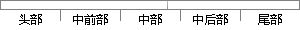

其中melFremax表示的是最大Mel频率，melFremin表示的是最小Mel频率，SampleRate表示的是信号的采样频率，filterNum表示的是帧的个数。
片段位置图

相似结果|
相似片段 1：表示Mel频率。20图 2-10 Mel频率与实际频率 f 的对应关系这些带通滤波器的参数是事先计算好的。图 2-11 给出了滤波器组的分布图，其中M选择为 24点，FFT点数 N为 256，语音信号的采样频率为 8kHz。
相似片段 2：Y轴表示Mel频率。我们可以在语音的频谱范围内设置若干个带通滤波器来进行转换。设M为滤波器的个数，通常取24，与临界带的个数一样：N为一帧语音信号的点数。滤波器在频域上为简单的三角形，其中心频率丘怍
|
※ 片段修改建议 ※
近似词参考：- 其中：此中 个中
- 表示：暗示 默示 示意 透露表现 表现
- 表示：暗示 默示 示意 透露表现 表现
- 表示：暗示 默示 示意 透露表现 表现
- 信号：旌旗灯号
- 表示：暗示 默示 示意 透露表现 表现
系统自动生成语句：此中melFremax暗示的是最大Mel频率，melFremin暗示的是最小Mel频率，SampleRate暗示的是旌旗灯号的采样频率，filterNum暗示的是帧的个数。
注：本片段修改建议为系统自动生成，仅供参考。